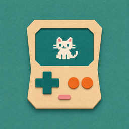

咕噜掌机
把 iPhone 变成一台握在手里的复古掌机。
牛皮纸和毛毡的手作手感，按下去有回弹。
能做什么
App 只是一台“掌机”，不附带任何商业游戏。内置一款原创双人小游戏《咕噜农场》，其余游戏请导入你自己拥有的文件。
手感像真按键
十字键按住滑动换方向，A、B 能一起按，按下有轻微震动。按键位置、大小、透明度都能自己摆。
不丢进度
每款游戏 3 个存档位，离开和切后台自动存档，卡带电池存档单独保存。
快进与倒带
2 倍、4 倍快进；失误了按住倒带，往回退大约 20 秒。
大屏 + 手机当手柄
iPad 或 Mac 当屏幕，两部 iPhone 在同一 Wi‑Fi 下当 1P、2P 手柄，扫码就能加入。
碰一下，一起玩
两部 iPhone 碰一碰就连上，一部当主机，另一部跟着看画面、当 2P。
实体手柄与键盘
Xbox、PlayStation、MFi 手柄即插即用，每个键都能重新绑定。
常见问题
怎么导入游戏？
在游戏库点「导入」，从「文件」里选择 .nes 文件，或者装着 .nes 的 .zip，可以一次选多个。也可以在别的 App 里「共享」或「用其他方式打开」到咕噜掌机。请只导入你自己拥有的游戏文件。
App 里为什么没有游戏可以下载？
咕噜掌机只是模拟器，不提供、不链接任何商业游戏。内置的《咕噜农场》是我们自己做的原创游戏。
大屏模式找不到 iPad？
确认两台设备连着同一个 Wi‑Fi，并且在「设置 › 隐私与安全性 › 本地网络」里允许了咕噜掌机。找不到时可以点「改用直连」，或者直接输入大屏上的 4 位房间号。
存档在哪里？会丢吗？
存档保存在你设备上的 App 里，删除 App 会一起删除。游戏中离开、切到后台都会自动存档。
某个游戏打不开或画面不对？
在游戏库长按这款游戏，「模拟核心」换成另一个试试。还是不行的话，欢迎发邮件告诉我们游戏名和现象。
源代码在哪里？
咕噜掌机按 GNU GPL 第 3 版（或更新版本）开源，源代码在 GitHub。
不收集任何数据
咕噜掌机没有账号、广告和统计。游戏、存档和设置只保存在你的设备上；大屏和碰一下只在你身边的设备之间直接连接。
使用中遇到问题或有建议？发邮件到 liaotao.studio@gmail.com，附上设备型号、系统版本和截图，我们会尽快回复。